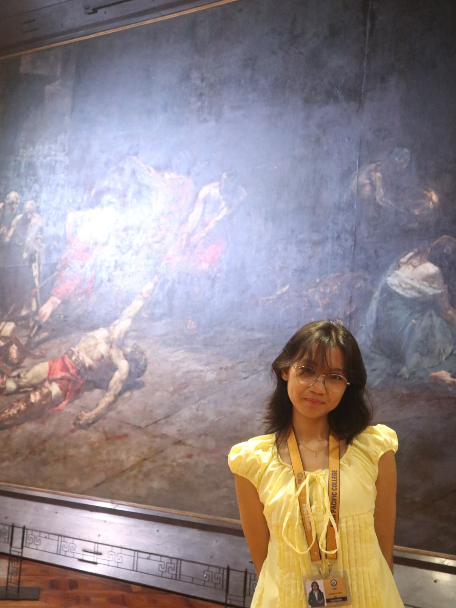
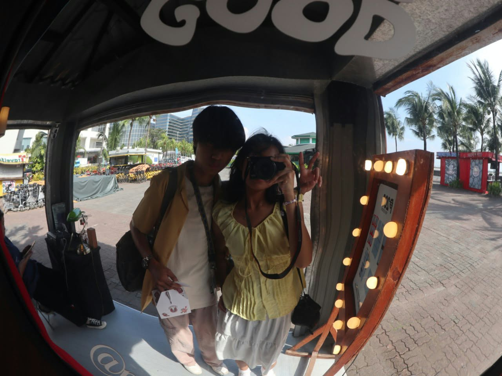
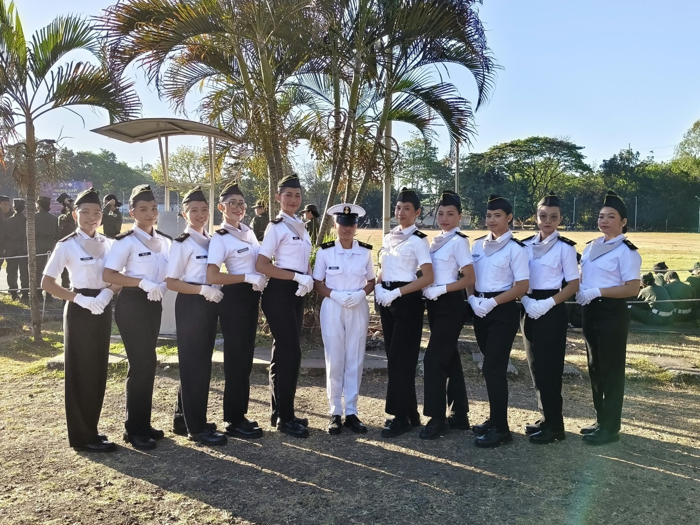
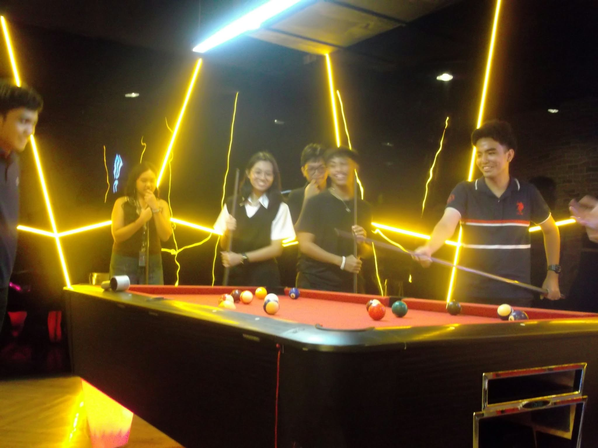

Hello! My name is Stephaniejen Mondragon Topinio.
I also go by my nickname, Tep.
I’m someone who enjoys learning new things, exploring my creativity, and developing new skills.
| Level | Strand/Program | School | Accomplishment |
|---|---|---|---|
| Junior and Senior High School | Science, Technology, Engineering, and Mathematics | Taguig Science High School | With honors, Trainee - Mathematics Trainers' Guild (MTG), Section's 2nd Best Research Proposal |
| College | Bachelor of Science in Information Technology | Technological University of the Philippines | Manila Technician Institute Member, 3rd Sem Dean's Lister |
| College | Bachelor of Science in Information Technology | Asia Pacific College | None yet, Just Transferred :> |
Through school activities and projects, I have gained basic knowledge of programming.
For my short term goal, as a transferee I want to be able to adapt to my new environment and meet new people that will help each other to grow. As for my long term goal in life, I want to achieve my dreams and become successful in my own ways. I want to finish my studies, find a stable job, and become financially independent. I know that achieving my goals will take time, patience, and hard work, so I want to keep learning and improving myself.
I know my dream is nothing much like a bigger dream, but I really want to have a peaceful life and live life for myself. I want to reach a point where I can make decisions, enjoy the things I love, and live constantly without worrying about the future. I want to be comfortable and at peace with myself.
Snaps through my lenses.



